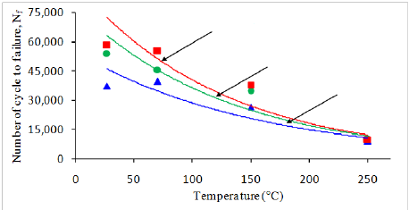
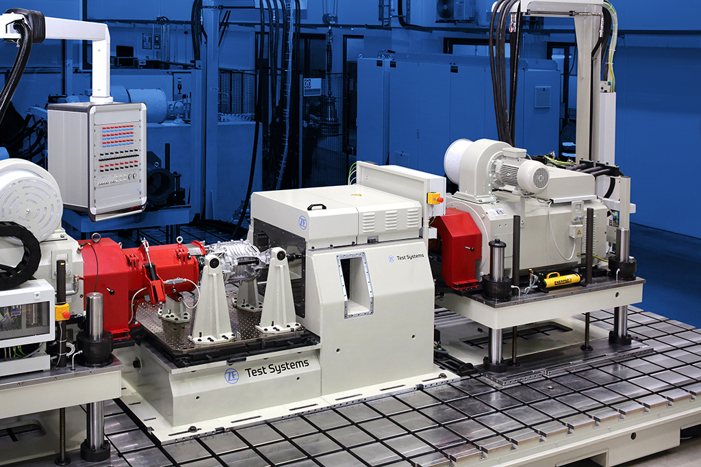
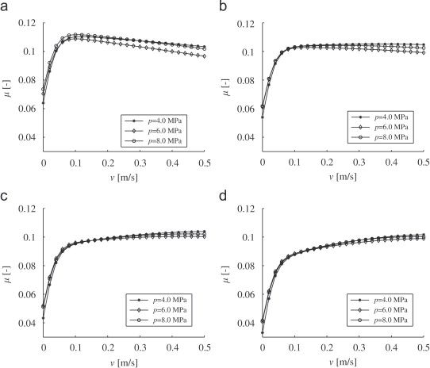

Friction Plate Fatigue Testing
Dual Clutch Transmission
 [src]
[src]
- In a DCT one clutch drives odd numbered gears and the other clutch drives the even numbered gears.
- In a DCT an odd gear can be preselected while the vehicle is in an even gear and vice versa, which makes it quite fast for gear shifts.
Clutch Pack
 [src]
[src]
- Clutches are the interface between engine and transmission in vehicle drivetrains.
- During the development of the wet clutch system in the Dual Clutch Transmissions, there is a need to know the durability and the friction behaviour of the clutch packs.
Drive Cycle
 [src]
[src]
- The first task is to implement a drive cycle to test the durability of the clutches. This cycle is repeated until the theoretical lifetime has been reached.
- For this task: three vehicle launches with increasing road slope are defined as a drive cycle. In co-operation with the Test Rigs Software Engineer, this cycle on the vehicles is converted to a cycle that is suitable to be implemented on ETR.
Life cycle calculation using thermal SN curve

[src]
- Based on the thermal model and the measured clutch interface temperature, and looking up on the thermal SN curve provided by the friction plate supplier (Borg-Warner),the number of cycles to achieve full life and damage of each cycle is calculated.
FPD Tests on ETR

[src]
- The second task is to investigate friction deterioration. To this end- a number of friction plate durability (FPD) tests and friction characterization tests are to be performed on Endurance Test Rigs (ETR) at different stages of the transmission development.
Friction Characterization

[src]
- a number of friction characterization tests were executed on the ETR on different transmissions that had undergone a different type of endurance tests.
- During these tests, the friction measurement cycles are executed to be able to plot the friction coefficients for a wide range of slipping speed, nominal surface pressure, interface temperature and oil contamination.
- The clutch lifetime achieved and the plots of the friction coefficients at the
different stages of the clutch lifetime were reported to the clutch domain owner.
❮
❯
![[src]](https://en.wikipedia.org/wiki/Dual-clutch_transmission#/media/File:Dual-clutch_transmission.svg){kind=link}
![[src]](https://ars.els-cdn.com/content/image/1-s2.0-S0043164815002033-gr1_lrg.jpg){kind=link}
![[src]](https://timesofindia.indiatimes.com/thumb/msid-56835043,imgsize-83862,width-400,resizemode-4/56835043.jpg){kind=link}
![[src]](https://www.researchgate.net/profile/Kamarul-Ariffin-Zakaria/publication/249645829/figure/fig4/AS:298240990826509@1448117601919/Normal-S-N-curve-of-AA6061-T6-tested-at-room-temperature.png){kind=link}
![[src]](https://www.automotivetestingtechnologyinternational.com/wp-content/uploads/2019/09/New-ZF-E-Mobility-Test-Rig-.jpg){kind=link}
![[src]](https://ars.els-cdn.com/content/image/1-s2.0-S0301679X07001995-gr9.jpg){kind=link}